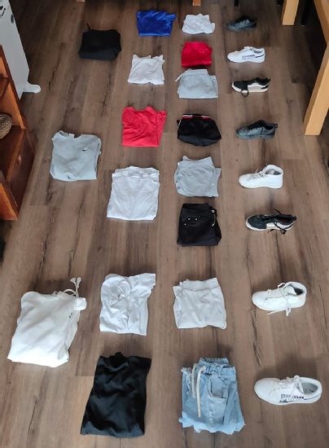

En ocasiones podemos atajar mucho en el recuento con dos estrategias que no deben mezclarse: el principio del producto y el principio de la suma.
Banderas
- Duración:
- 10
- Agrupamiento:
- Parejas
¿Cuántas banderas de 3 bandas horizontales pueden formarse con 3 colores distintos si se utilizan los tres?
Y si quisiéramos hacer banderas de 10 bandas horizontales utilizando 10 colores distintos si se utilizan los 10?
¿De cuántas formas puedo vestirme?
- Duración:
- 5
- Agrupamiento:
- Parejas

El principio del producto
Principio del producto
Si una situación puede ocurrir de \( m \) maneras y otra de \( k \) maneras, entonces ambas situaciones pueden ocurrir de:
\[ m \cdot k \text{ maneras} \]
De camino a la escuela
Para ir de casa a la escuela, una persona puede elegir entre:
- Tomar una de las 5 líneas de autobús que llegan al centro escolar.
- O bien ir caminando por uno de los 2 caminos distintos posibles.
Suponiendo que no se pueden realizar ambas opciones a la vez, ¿de cuántas formas distintas puede ir una persona de casa al instituto?
Principio de la suma
Principio de la suma
Si una situación puede ocurrir de \( m \) maneras diferentes y otra de \( k \) maneras diferentes, incompatibles las unas con las otras, entonces existen \( m + k \) maneras en las cuales puede ocurrir la primera o la segunda, pero no ambas.
Números pares
¿Cuántos números pares de tres cifras significativas mayores que 500 hay?
¿Cuántos números pares de tres cifras significativas menores que 500 hay?
¿Cuántos números pares de tres cifras significativas hay?
Delegado y subdelegado
Una clase está formada por 13 varones y 19 mujeres:
¿De cuántas formas puede elegirse un delegado?
¿De cuántas formas puede elegirse un delegado y un subdelegado?